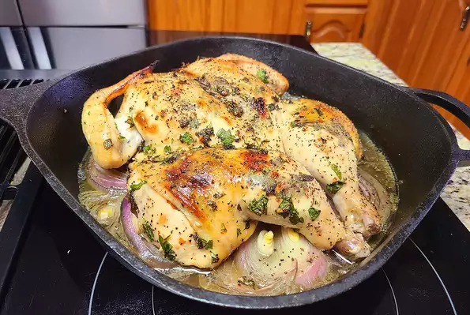

Chimichurri chicken

Chimichurri is growing fast in popularity and is the most perfect condiment to serve with your chicken or steak! So easy to make and tastes incredible, your Chimichurri Chicken dinner is ready in minutes! With only a handful of ingredients and NO food processors or blenders!
Chimichurri is a loose oil-based condiment used to accompany barbecued meats or churrasco. With so many variations in the world of Chimichurri, it's difficult to say which is the closest to the most authentic recipe there is. This Chimichurri recipe is my Uruguayan born and raised father's recipe; one of the best cooks I know.
Truth be told, in Argentina or Uruguay we don't marinate or baste our meats in chimichurri ever. Used solely as an accompany for your proteins, chimichurri is always served on the side of your plate to dip or pour over your meat.
With this recipe, however, I convinced my father to try marinating some chicken thighs as they are a completely different flavour to beef, and to try the outcome.
Ingredients
- 1 cup finely chopped fresh parsley
- 2 tablespoons olive oil
- 2 tablespoons chopped fresh oregano leaves
- 1 tablespoon red wine vinegar
- 2 cloves garlic, minced
- 1 teaspoon red pepper flakes
- 1 pinch freshly ground black pepper
- 1 (3 pound) whole chicken
- 1 teaspoon olive oil
- 1 large onion, sliced
Steps
- Combine parsley, 2 1/2 tablespoons olive oil, oregano, vinegar, garlic, salt, red pepper flakes, and black pepper in a bowl; mix the chimichurri thoroughly.
- Place chicken on a cutting board and remove the backbone using kitchen shears. Press down on the breast with the heel of your hand to flatten. Loosen the skin of the chicken carefully and rub the chimichurri underneath, distributing it evenly. Wrap the chicken in plastic wrap and refrigerate for 24 hours.
- Allow chicken to come to room temperature for no more than 1 hour before baking.
- BAllow chicken to come to room temperature for no more than 1 hour before baking.
- Rub 1 teaspoon olive oil over the chicken; season with salt and pepper. Place onion in a cast-iron skillet. Pour chicken broth over onion. Place seasoned chicken on top.
- Bake in the preheated oven until no longer pink at the bone and the juices run clear, about 45 minutes. An instant-read thermometer inserted into the thickest part of the meat, near the bone, should read 165 degrees F (74 degrees C). Allow chicken to rest in a warm area for 10 minutes before slicing.